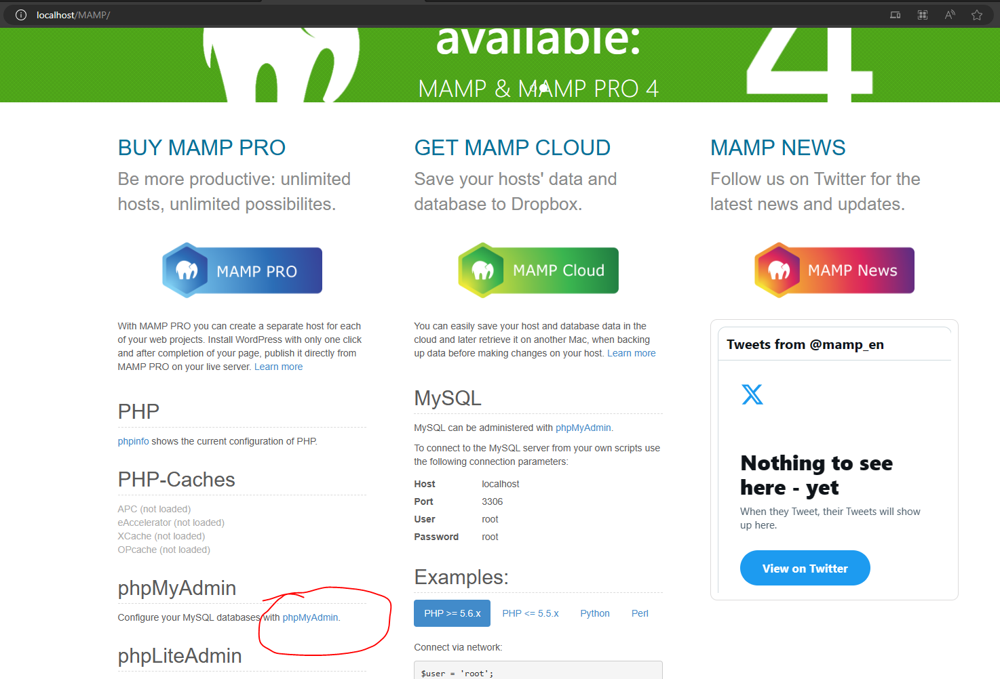
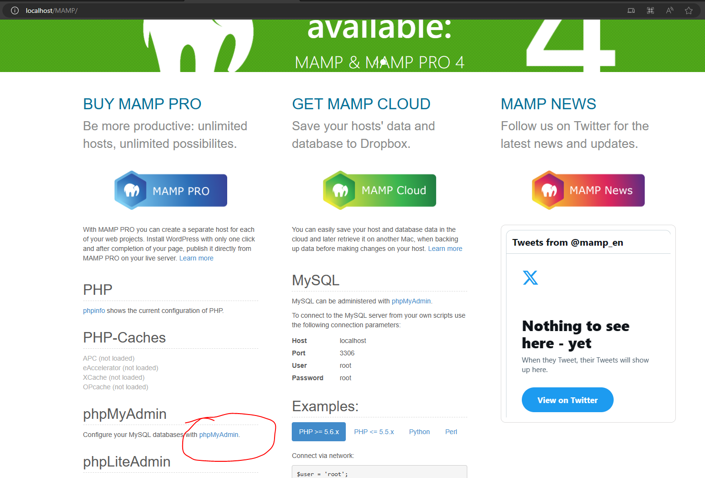
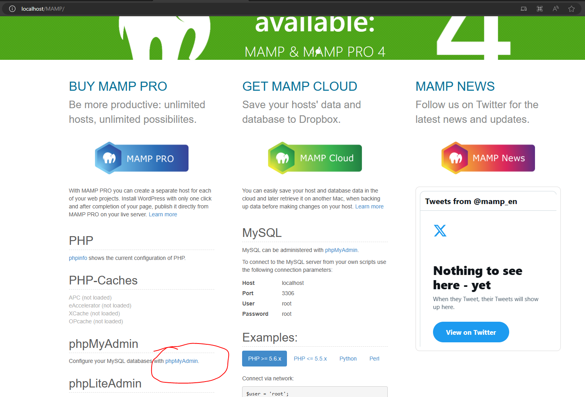

First Android Game - Part 20 - Save data - MySQLOct 08, 2023This is part 20 of making my first Android Game. If you missed part19, you can find it here. There are weapons that the user can buy. If the user starts the game over and come back into the game, it would be great if what they bought are carried over. It can be frustrating for the user if all the weapons are gone. We will be exploring different ways to save data. The first one we will explore is MySQL. I will be following this Tutorial playlist by BoardToBitsTo create a database I will need to setup a local server. Therefore, I will download MAMP from this site. When I open MAMP, I will first go to MAMP > Preferences > Server and change the Document Root. This is where all the PHP files will be storedI'll need setup the database. Select the Open WebStartPage. A http://localhost/MAMP/ will open. localhost refers to the root that we set in Web Server Document Root. MAMP is the splash page that MAMP made. We will select the hyper link that says phpMyAdmin

At the home page select user accounts. You will see a "root" user account. This is the default. If you decide to make your application for public to use, you should create your own user account with a new user name and passwordNow we need to create a database to connect. Select database, I will name my database unity-sql-learning. Select createCreate a table for the database. Name it player and set number of columns to 5There are 5 rows where we need to populate information about them. Each row we will need to provide information about them. Those are the name, type, length/values, default, coaliation, Null, index, A_I, and comments.The first information is a unique identifier called id. We want the id to differentiate the players. Type is int, give a length 10. We won't worry about default, coliation and attributes. NULL is false. The index will be PRIMARY. A_I is autoincrement, set that to true. Next one is username, type is VARCHAR which is a combination of letters and numbers. Max length is 16 character. Skip default(because we want someone to populate this field), coaliation, attribute, null. Index needs to be unique. Skip A_I. Next is password, but we won't store password as plain text for security reasons. We will use hash and salt. Set both to VARCHAR because a good password have different characters. Length is 100 and 50 respectively. Skip the rest. Lastly is the score - this is the game data we want to store. Type is INT. Length is 10. Default as As defined and set to 0 because by default the score is 0. Skip the rest. Make sure you save. I will be using sublime text to code my php. Sublime can be downloaded here. In Unity, we will create 4 scenes: Main Menu, Login, Register, Game. Main Menu will have 3 buttons: RegisterMenu, Login, Play Game and a text that tells us if the user is logged in. RegisterMenu has a button that says register and two input fields that lets user enter their username and password. Login Scene has the same two inputfields as Register but the button will say Log in. Game Scene will have a button the increments the score and a button that exits the game and go back to Main Menu scene. In the Main Menu Scene and RegisterMenu scene, attach a script called MainMenu.cs and Registeration.cs to the canvas respectively. The MainMenu.cs will have reference to all 3 buttons and the text. Create a function for each button so that the user presses Register, Login and PlayGame button it will load the RegisterMenu scene, Login Scene and Game scene. I will wrap this code in the namespace MySQLLearning so that it does not conflict with my tomato vs potato game. This is because these scripts are for testing.Attach a reference the OnClick on each button. For example, the Login has a reference to the canvas and the function is GoToLogin()In Registration.cs, I have a reference to the inputfields and the register button. The register button is not interactable at the start. It is also not interactable if the number of characters in username and password are less then 8 charactersOn the inputfields for username and password in RegisterMenu scene, attach a reference to VerifyInput to On Value ChangedCreate a public function called CallRegister() which will call a coroutine called RegisterRoutine(). On the Register button, have the OnClick reference to CallRegister()The RegisterRoutine() will make a post to the url specified. In this case it is http://localhost/register.php which is where our register.php script will be saved. In the form it will pass in the username and password that the user has entered in the inputfield. This will be passed into a WWWFormThe routine will wait for the webrequest to finish making its request. If it fails due to Connection error, processing error or protical error. It will try again until its reaches the const int MAX_REQUEST_ATTEMPT_COUNT which I set to 2. Then it will print out the downloadhandler informationIf the request succeeds, I will check if the downloadhandler text does not contain a "0". This 0 will be from echo from the register.php. a non 0 will be an error code we add in a bit. If there is a 0, then everything passed and we load into the Login scene.Now we will go into sublime text to create register.php. I will be saving this php script in the folder specified in the document root. In any php scripts, we need to encapsulate them in . We will make a connection to our database. We will store that in a variable called $con. To connect to the database will make a function call mysqli_connect(). We will pass into the function the location of the database, which in this case is localhost. Then the user name which in this case is root, and also the password which is root. The password won't be seen in the browser and only stored on the backend so it is ok to hardcode the password here. Lastly we put in the database which in this case is unity-sql-learning. Now we want to check if the connection happened by doing an if statement to see if there were any errors mysqli_connect_errno(). If there is, we will echo 0. Echo is like debug log, it's the text the prints into the downloadhandler text. We will echo 1 if there is an error. We will exit() if there is an error. If it is successful, we will create a variable called username and password. Remember we get the username and password from the WWWForm. Using $_POST where $_ means it is a constant thing and we check for POST to see if there is the variable name and password from the form. Next we will double check if the name already exist, if the name exist we will not allow the user to add the name by using a query. First we create a variable called namecheckquery. We set the variable to "SELECT username FROM players WHERE username='" . $username . "';"; player is the table and username is the column. We concatenate a string by using periods . which is the php version of concatenating. Next, we create a variable namecheck which is set to a function call mysqli_query(). This function takes in our connection variable con our query variable namecheckquery. If this query did not work we say or die("2: Name check query failed") which will exit the code AND display information "2". Now we see if this name exists by checking if any rows were returned by doing an if statement and checking mysqli_num_rows($namecheck) > 0. If this is true then the name exists and we echo an error code. Otherwise, everything passed then we can add the user to the table.We need to make sure to salt and hash the password because we can't store passwords as plain text. Hashing means they can't immediately some information and get some password. Salting means we don't let hackers use lookup tables to break through encrypted passwords. So first create a salt variable. Assign it to \$5\$rounds=5000\$. Note the \ tells us write the actual symbol, in this case the $ symbol. The $ symbol is not any thing special. We are using a SHA256 to encrypt passwords (indicated by the 5), it will use 5000 shifts and come up with a nest of code to encrypt the password. We then concatenate an additional line, can be anything that we want. We want a 16 character salt, and in this case we use the username as part of the salt. We pass in the username and concatenate on last \$. The hash variable will be assigned to crypt($password, $salt) Then we will use the query that inserts the information into the database. "INSERT INTO players (username, hash, salt) VALUES ('" . $username . "', '" . $hash . "', '" . $salt . "');"; we will send this query by doing mysqli_query($con, $insertuserquery) or die("4: Insert player query failed");. Lastly we will echo 0! Remember 0 is how we check downloadhandler text in our Registeration.csNow when a user successfully registers, the player table will have a row. Notice that the ID is 3, meaning this is the the 3rd person that registered because autoicrement the id. The salt and hash are encrypted. Score by default is 0Recent blogsSee all blogs
 I'll need setup the database. Select the Open WebStartPage. A http://localhost/MAMP/ will open. localhost refers to the root that we set in Web Server Document Root. MAMP is the splash page that MAMP made. We will select the hyper link that says phpMyAdmin

At the home page select user accounts. You will see a "root" user account. This is the default. If you decide to make your application for public to use, you should create your own user account with a new user name and password
I'll need setup the database. Select the Open WebStartPage. A http://localhost/MAMP/ will open. localhost refers to the root that we set in Web Server Document Root. MAMP is the splash page that MAMP made. We will select the hyper link that says phpMyAdmin

At the home page select user accounts. You will see a "root" user account. This is the default. If you decide to make your application for public to use, you should create your own user account with a new user name and password
 Now we need to create a database to connect. Select database, I will name my database unity-sql-learning. Select create
Now we need to create a database to connect. Select database, I will name my database unity-sql-learning. Select create
 Create a table for the database. Name it player and set number of columns to 5
Create a table for the database. Name it player and set number of columns to 5
 There are 5 rows where we need to populate information about them. Each row we will need to provide information about them. Those are the name, type, length/values, default, coaliation, Null, index, A_I, and comments.
There are 5 rows where we need to populate information about them. Each row we will need to provide information about them. Those are the name, type, length/values, default, coaliation, Null, index, A_I, and comments.
 The first information is a unique identifier called id. We want the id to differentiate the players. Type is int, give a length 10. We won't worry about default, coliation and attributes. NULL is false. The index will be PRIMARY. A_I is autoincrement, set that to true. Next one is username, type is VARCHAR which is a combination of letters and numbers. Max length is 16 character. Skip default(because we want someone to populate this field), coaliation, attribute, null. Index needs to be unique. Skip A_I. Next is password, but we won't store password as plain text for security reasons. We will use hash and salt. Set both to VARCHAR because a good password have different characters. Length is 100 and 50 respectively. Skip the rest. Lastly is the score - this is the game data we want to store. Type is INT. Length is 10. Default as As defined and set to 0 because by default the score is 0. Skip the rest. Make sure you save.
I will be using sublime text to code my php. Sublime can be downloaded here. In Unity, we will create 4 scenes: Main Menu, Login, Register, Game. Main Menu will have 3 buttons: RegisterMenu, Login, Play Game and a text that tells us if the user is logged in. RegisterMenu has a button that says register and two input fields that lets user enter their username and password. Login Scene has the same two inputfields as Register but the button will say Log in. Game Scene will have a button the increments the score and a button that exits the game and go back to Main Menu scene. In the Main Menu Scene and RegisterMenu scene, attach a script called MainMenu.cs and Registeration.cs to the canvas respectively. The MainMenu.cs will have reference to all 3 buttons and the text. Create a function for each button so that the user presses Register, Login and PlayGame button it will load the RegisterMenu scene, Login Scene and Game scene. I will wrap this code in the namespace MySQLLearning so that it does not conflict with my tomato vs potato game. This is because these scripts are for testing.
The first information is a unique identifier called id. We want the id to differentiate the players. Type is int, give a length 10. We won't worry about default, coliation and attributes. NULL is false. The index will be PRIMARY. A_I is autoincrement, set that to true. Next one is username, type is VARCHAR which is a combination of letters and numbers. Max length is 16 character. Skip default(because we want someone to populate this field), coaliation, attribute, null. Index needs to be unique. Skip A_I. Next is password, but we won't store password as plain text for security reasons. We will use hash and salt. Set both to VARCHAR because a good password have different characters. Length is 100 and 50 respectively. Skip the rest. Lastly is the score - this is the game data we want to store. Type is INT. Length is 10. Default as As defined and set to 0 because by default the score is 0. Skip the rest. Make sure you save.
I will be using sublime text to code my php. Sublime can be downloaded here. In Unity, we will create 4 scenes: Main Menu, Login, Register, Game. Main Menu will have 3 buttons: RegisterMenu, Login, Play Game and a text that tells us if the user is logged in. RegisterMenu has a button that says register and two input fields that lets user enter their username and password. Login Scene has the same two inputfields as Register but the button will say Log in. Game Scene will have a button the increments the score and a button that exits the game and go back to Main Menu scene. In the Main Menu Scene and RegisterMenu scene, attach a script called MainMenu.cs and Registeration.cs to the canvas respectively. The MainMenu.cs will have reference to all 3 buttons and the text. Create a function for each button so that the user presses Register, Login and PlayGame button it will load the RegisterMenu scene, Login Scene and Game scene. I will wrap this code in the namespace MySQLLearning so that it does not conflict with my tomato vs potato game. This is because these scripts are for testing.
 Attach a reference the OnClick on each button. For example, the Login has a reference to the canvas and the function is
Attach a reference the OnClick on each button. For example, the Login has a reference to the canvas and the function is  In Registration.cs, I have a reference to the inputfields and the register button. The register button is not interactable at the start. It is also not interactable if the number of characters in username and password are less then 8 characters
On the inputfields for username and password in RegisterMenu scene, attach a reference to
In Registration.cs, I have a reference to the inputfields and the register button. The register button is not interactable at the start. It is also not interactable if the number of characters in username and password are less then 8 characters
On the inputfields for username and password in RegisterMenu scene, attach a reference to  We need to make sure to salt and hash the password because we can't store passwords as plain text. Hashing means they can't immediately some information and get some password. Salting means we don't let hackers use lookup tables to break through encrypted passwords. So first create a
We need to make sure to salt and hash the password because we can't store passwords as plain text. Hashing means they can't immediately some information and get some password. Salting means we don't let hackers use lookup tables to break through encrypted passwords. So first create a  Now when a user successfully registers, the player table will have a row. Notice that the ID is 3, meaning this is the the 3rd person that registered because autoicrement the id. The salt and hash are encrypted. Score by default is 0
Now when a user successfully registers, the player table will have a row. Notice that the ID is 3, meaning this is the the 3rd person that registered because autoicrement the id. The salt and hash are encrypted. Score by default is 0